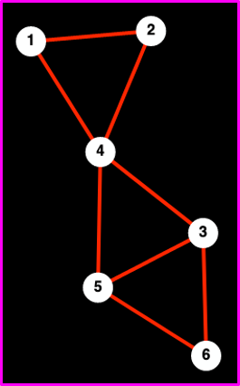

Topics in Mathematical Biology
Lecture 3
Jonathan Crofts
Nottingham Trent University
Topics in Mathematical Biology L3
- Network traversals: walks and paths (ctd)
- Watts-Strogatz clustering
- Transitivity index
Network traversals (ctd)
- A path is a walk in which all nodes and edges are distinct -- except possible the first and the last node
- The shortest path connecting two nodes is called the distance between two nodes, and is denoted by $d(v_i,v_j)$ or $d_{ij}$
- Two historically important measures in network science are
- The average (or characteristic) path-length: \[ \color{red}{\boxed{\color{white}{ \langle l\rangle = \frac{1}{n(n-1)}\sum_{i,j}d(v_i,v_j)}}} \]
- And the network diameter \[ \color{red}{\boxed{\color{white}{ \max_{i,j} d(v_i, v_j)}}} \]
Example 3.1
The adjacency matrix is
\[ A = \begin{pmatrix} 0&1&0&1&0&0\\ 1&0&0&1&0&0\\ 0&0&0&1&1&1\\ 1&1&1&0&1&0\\ 0&0&1&1&0&1\\ 0&0&1&0&1&0\\ \end{pmatrix} \] and the distance matrix is
\[ D = \begin{pmatrix} 0&1&2&1&2&3\\ 1&0&2&1&2&3\\ 2&2&0&1&1&1\\ 1&1&1&0&1&2\\ 2&2&1&1&0&1\\ 3&3&1&2&1&0\\ \end{pmatrix} \]The diameter of this network is 3 and the average path-length is 1.6 (exercise)

Note
Topics in Mathematical Biology L3
- Network traversals: walks and paths (ctd)
- Watts-Strogatz clustering
- Transitivity index
Watts-Strogatz clustering
- Clustering as a concept has its roots in social networks, the idea being that you are more likely to be friends with a friend's friend than a random person
- In terms of network structure this results in the formation of lots of triangles
- To measure the density of triangles present at a node we can use the quantity
This is the local WS clustering of a node
Let us formulate a mathematical expression for the above
But before we do that, what exactly do we mean by `possible triangle'?
Example 3.2
Consider node 4 in the following networks

 \[
3\text{ possible; } 0\text{ triangles}\qquad 3\text{ possible; } 3\text{ triangles}\qquad
3\text{ possible; } 1\text{ triangles}
\]
\[
3\text{ possible; } 0\text{ triangles}\qquad 3\text{ possible; } 3\text{ triangles}\qquad
3\text{ possible; } 1\text{ triangles}
\]
- We see that the number of possible triangles (or two-paths) is related to the degree of the node
- In fact, it is given by
- Thus, if we denote the number of triangles at node $i$ by $t$ then we have
\[ \begin{align*} \binom{n}{2}&=\frac{k_i!}{k_i(k_i-2)!} \qquad (k_i \text{ degree of node } i)\\ &= \frac{k_i(k_i-1)}{2} \end{align*} \]
As is common in network science we obtain a global measure of clustering by averaging over the local measure
Thus
In the above $C_i$ denotes the local WS clustering of the $i$th node
There is however a more natual way to measure global clustering ...
Topics in Mathematical Biology L3
- Network traversals: walks and paths (ctd)
- Watts-Strogatz clustering
- Transitivity index
Transitivity index
Denote by
\[ |P_2| - \text{ total $\#$ of two-paths in the network} \]and by
\[ |C_3| - \text{ total $\#$ of triangles in the network} \]Then we define a global measure of clustering, know as the transitivity index, as follows
\[ \color{red}{\boxed{\color{white}{ \quad T = \frac{3|C_3|}{|P_2|}}}}\quad \]Note
The factor of three accounts for the fact that each triangle contains 3 two-paths


Example 3.3
Let $N = (V, E)$ be the network shown below
The adjacency matrix of which is
\[ A = \begin{pmatrix} 0&1&1&1&1&0&0&0\\ 1&0&1&0&0&1&0&0\\ 1&1&0&1&0&0&1&0\\ 1&0&1&0&0&0&0&1\\ 1&0&0&0&0&0&0&0\\ 0&1&0&0&0&0&0&0\\ 0&0&1&0&0&0&0&0\\ 0&0&0&1&0&0&0&0\\ \end{pmatrix} \]Compute $C_i$ for each node and compute the global WS clustering coefficient
- Compute the transitivity index
Solution
(1) Clearly, $C_5 = C_6 = C_7 = C_8 = 0$
Also,
\[ C_2 = C_4 = \frac{1}{3} \] and \[ C_1 = C_3 = \frac{1}{3} \]Therefore
\[ \begin{align*} \langle C\rangle &= \frac{1}{8}\left(\frac{1}{3}+\frac{1}{3}+\frac{1}{3}+\frac{1}{3}+0+0+0+0\right)\\ &=\frac{1}{6} \end{align*} \]This is the global WS clustering coefficient
Solution (ctd)
(2) To compute the transitivity we use the fact that
\[ |C_3| = \frac{1}{6}\mathrm{Tr}(A^3) \]To see this recall
\[ \mathrm{Tr}(A^3) = \sum_{i}\left(A^3\right)_{ii} \]and
\[ \left(A^3\right)_{ii} - \text{ $\#$ of closed walks of length 3 centred at node $i$} \]In other words the trace of A to the power 3 is proportional to the number of triangles in a network - it actually over counts
Solution (ctd)
In this case it is easier to count the triangles by looking at the plot
\[ |C_3| = \frac{\mathrm{Tr}(A^3)}{6} = 2 \]To obtain the number of two-paths:
\[ \begin{align*} |P_2| &=\sum_{i=1}^n\binom{k_i}{2}\\ &=\sum_{i=1}^n\frac{k_i(k_i-1)}{2}\\ &=18 \qquad\implies \qquad T = \frac{3|C_3|}{|P_2|} = \frac{3\times 2}{18} = \color{red}{\boxed{\color{white}{\frac{1}{3}}}} \end{align*} \]Exercise: compute the number of triangles using the adjacency matrix
Note
- $C$ is typically not equal to $T$; in fact, they can be wildly different.
- A network for which $C$ (or $T$) is large and for which the average path-length is small is called small-world network
Mathematicians say a network is small-world if
\[ \color{red}{\boxed{\color{white}{ \langle l\rangle \propto \ln{n} }}} \]Here, $n$ is the size of the network.
The following identities are often useful when computing clustering
\[ \color{red}{\boxed{\color{white}{ \mathrm{Tr}(A) = \sum_{i=1}^n\lambda_i \quad \text{ and } \quad \mathrm{Tr}(A^k)\sum_{i=1}^2\lambda_i^k }}} \]Here the $\lambda_i$ are the eigenvalues of $A$
Lecture 3 Review
- In this lecture we covered
- Network traversals: walks and paths (ctd)
- Watts-Strogatz clustering
- Transitivity index
- After this lecture you should
- understand the important concept of network clustering
- know the difference between WS clustering and network transitivity